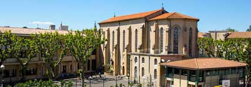

A La Salle, choisir rime avec grandir !
Choisir d’être interne, c’est rechercher de bonnes conditions de travail personnel pour une meilleure réussite scolaire. C’est choisir de vivre cette proposition comme une chance, et non comme une rupture coupable. Apprendre à travailler, bien gérer son temps, développer ses capacités. Tout cela est possible !
Nous sommes là pour vous
Vous trouverez auprès des adultes responsables, une oreille attentive quel que soit le sujet qui vous amène. De l’aide à l’organisation d’événements aux sujets plus personnels, notre équipe, formée à l’écoute active, s’attachera à faire vivre une relation basée sur la confiance et la responsabilisation de chacun.
- 1internat garçons
- 44 Lycéens
- Ouvert du lundi jusqu'au vendredi
La vie à l'internat L'internat accueille les élèves de Lycée en chambres de 2 à 4 lits. Des activités propres à l’internat sont organisées. Deux sorties par semaine sont accordée sur autorisation écrite des parents pour les élèves de plus de 16 ans.
Les études à La Salle Avignon
Nous nous attachons à tout mettre en œuvre pour que chaque jeune puisse trouver sa voie vers son succès, sa réussite. Une attention à la personne est indispensable pour permettre de répondre aux besoins de tous. Enseigner ce n’est pas choisir l’élève mais c’est faire en sorte que l’élève vous choisisse. C’est ainsi que nous le rendons acteur de sa construction, c’est ainsi que nous vivons notre projet éducatif. Nous sommes soucieux d'intégrer nos élèves afin qu'ils puissent s’épanouir et s'investir pleinement dans leur formation. C'est dans cet objectif que, dès le 1er jour de la rentrée, nous partons pour 3 jours vivre le "Trophée La Salle". Ce challenge, basé sur des activités artistiques, culturelles et sportives, permet aux élèves, accompagnés des enseignants, d'apprendre à se connaître très rapidement. Ces temps de partage favorisent l'échange en remplaçant, l'espace de trois jours, la relation "enseignant / enseigné" par la relation humaine, ciment de notre fonctionnement.
L'auto-école "La Salle"
Une première en France que la convention mise en place entre notre établissement et une auto-école basée sur l’importance que nous donnons au permis de conduire pour une bonne insertion professionnelle. Cette formation s’intègre dans le parcours scolaire comme un élément d’éducation à la citoyenneté et de construction d’adultes responsables. A ce titre, elle fait partie de l’emploi du temps.

La dimension pastorale au lycée La Salle Avignon
Notre désir, à la suite des Frères des Ecoles Chrétiennes, est de proposer aux jeunes générations une éducation marquée par la Foi Chrétienne. A chaque jeune qui nous rejoint, nous disons : « je crois en toi, j’espère avec toi et je t’aime comme tu es ». Il nous revient ensuite de nous adapter à chacun pour mieux le servir. Notre communauté éducative, au service du jeune, permet un climat de respect, d’estime, de confiance et d’attention à l’autre. De cette dimension jaillit la Fraternité, création d’un foyer de vie.

Les actus de l'enseignement supérieur
L'enseignement supérieur La Salle Avignon est dynamique et toujours en projet